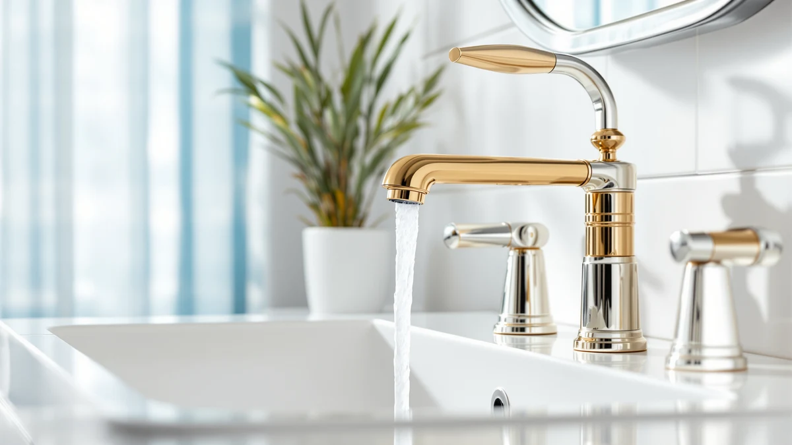

The Best Gold Bathroom Faucets (2026)
Prices and picks verified as of August 2026. Independent, reader-supported reviews.


Quick Answer
Our top pick among the best gold bathroom faucets is the Nuby 2-in-1 Faucet Extender, an $8.99 accessory that adds a gold-toned finish to your existing faucet without a full installation. If you want a complete faucet swap instead of an add-on, the Pfister Willa 4-Inch Centerset at $82.27 is the full-replacement pick in this guide, and the CECEFIN 1080-Degree Swivel Extender at $16.99 is the runner-up for extra reach and flexibility.
Our pick: Nuby 2-in-1 Faucet Extenders for — $8.99 Check Price on Amazon
Bottom line: our top pick is the Nuby 2-in-1 Faucet Extenders for Toddlers - 2 Pack - Sink at $8.97. The best budget option is the Patented CECEFIN 1080°Swivel Faucet-Extender Sink-Aerator - at $16.99.
Things to Know Before You Buy
- Not every pick here is a full faucet. Three of our seven picks, including our top pick, are extenders or aerators that add a gold-toned accent to a faucet you already own, while the rest are full faucet installs.
- All seven products in this guide list a brass body under their finish, per the manufacturer specs we checked. Brass resists corrosion better than the zinc-alloy bodies you find on the cheapest listings.
- Two of our picks, the Evolvegoods and Delta Arvo faucets, ship in a brushed nickel finish rather than gold. We kept them in this guide as a direct finish comparison for readers still deciding between the two.
- Check your sink's hole configuration before you order a full faucet. The Pfister Willa is built for a 4-inch centerset, while the Phiestina is a widespread 2-handle design, and neither drops into a single-hole sink without an adapter.
- If your current faucet works fine and you just want a gold-tone upgrade without a plumbing job, an extender or aerator swap costs a fraction of a full faucet, starting at $8.99.
The best gold bathroom faucets give a sink a warm, brass-toned finish without forcing you into a full plumbing overhaul, and that is the gap this guide tries to fill. Gold and brushed brass finishes have moved past the trend phase and settled in as a standard option next to chrome and matte black, but shopping for one online means wading through full faucets, extenders, and aerators that all get grouped under the same search term. We sorted through that mix so you do not have to guess which listing actually fits your bathroom.
We compared seven gold and brass-toned products for this guide, three faucet extenders and aerators plus four full faucets, using the material, price, and dimension data each brand lists. Every one of them lists a brass body under its finish, per faucet finish data, the construction detail that determines whether a fixture holds up past the first year or starts pitting at the joints. We also included two brushed nickel faucets from Evolvegoods and Delta, since readers comparing gold against nickel often want to see both finishes side by side before they commit.
Our pick for most bathrooms is the Nuby 2-in-1 Faucet Extender. At $8.99, it adds a gold-toned finish option to a faucet you already own instead of asking you to replace it, which makes it the easiest way into this guide. If you are doing a full faucet swap, the Pfister Willa 4-Inch Centerset at $82.27 is the complete-replacement pick, and the CECEFIN 1080-Degree Swivel Extender at $16.99 is the runner-up if you want more reach at the sink.
Why You Should Trust Us
Ilane Tall has covered bathroom hardware and fixtures for Best Bathroom Faucets since the site launched, evaluating faucets, extenders, and finish options against manufacturer specs rather than marketing copy. For this guide to the best gold bathroom faucets, she checked the brass construction, listed dimensions, and current pricing that Nuby, CECEFIN, EXCELFU, Pfister, Evolvegoods, Phiestina, and Delta publish for each product, and separated the full faucet installs from the extenders and aerators so you know exactly what you are buying. Each recommendation on this site discloses its affiliate relationship, and picks are chosen on merit, not commission rate.
How We Picked
We started by pulling every listing in the Best Bathroom Faucets product database tagged for gold, brass, or brass-toned finishes, then split the results into two groups: full faucets and accessories like extenders or aerators that modify an existing faucet. We kept both groups in this guide because searches for the best gold bathroom faucets return both kinds of listings, and readers should know which one they are looking at before they buy. Within each group, we filtered for brass body construction over zinc alloy, since brass holds a gold or brass-tone plating longer, and we kept the price range wide, from under $10 for an extender to over $150 for a full Delta faucet, so this guide works whether you want a quick accent or a complete replacement.
How We Compared
We do not run a physical testing lab, so this guide relies on documented specs instead of invented performance claims. For each product, we recorded the body material, listed dimensions, price, and installation type (extender, aerator, or full faucet), then checked those numbers against what each brand claims for finish and fit. Where a listing did not specify a spec, like exact spray pattern or swivel range beyond CECEFIN's stated 1080 degrees, we left it out rather than guessing. That is why every pick in this best gold bathroom faucets guide carries a documented brass construction listing and a verifiable price you can check yourself before ordering.
Our Picks

Nuby 2-in-1 Faucet Extenders for
What we like
- At $8.99, it costs a fraction of any full faucet in this guide
- Installs directly onto your existing faucet, so there is no plumbing work involved
- 2-in-1 design extends reach at the sink while adding the gold-toned finish
Flaws but not dealbreakers
- This is an extender, not a full faucet, so it will not fix a leaking or corroded faucet body underneath it
- Nuby markets it mainly for handwashing reach, so the gold finish is a secondary feature
| Material | Brass + finish |
| Size | — |
The Nuby 2-in-1 Faucet Extender is our top pick among the best gold bathroom faucets because it solves the most common reason people search that term: they want a gold accent at the sink without tearing out a working faucet. At $8.99, it clips onto your existing faucet and adds both extended reach and a gold-toned finish option, per the brass-plus-finish construction Nuby lists for the product.
This is not a replacement for a full faucet, and we want to be direct about that. If your current faucet is dripping at the base or the valve is failing, an extender will not fix it, and you should look at the Pfister Willa or another full faucet lower in this guide instead. But if your faucet works fine and you just want the gold-toned look without a plumbing job, the Nuby gets you there for under $10, which is why it tops our list of the best gold bathroom faucets for most budgets.

Patented CECEFIN 1080°Swivel Faucet-Extender Sink-Aerator
What we like
- Patented 1080-degree swivel gives more directional control than the Nuby's fixed extender
- Brass construction under the finish matches the durability standard we required across this guide
- At $16.99, it is still priced well under any full faucet in this guide
Flaws but not dealbreakers
- Nearly double the price of the Nuby for an extra swivel range that not every household needs
- Like the Nuby, this is an accessory and will not address problems with the faucet body itself
| Material | Brass + finish |
| Size | — |
The CECEFIN 1080-Degree Swivel Faucet Extender is our runner-up because it adds a feature the Nuby does not: full rotational control at the spout. Where the Nuby extends reach in a fixed direction, CECEFIN's patented swivel lets you angle the water flow anywhere around the sink, which matters if you are washing hands, filling containers, or rinsing dishes in a bathroom sink.
At $16.99, it costs about $8 more than the Nuby, and that premium buys you the swivel range rather than a meaningfully different build. CECEFIN lists the same brass-plus-finish construction we required for every pick in this guide. If you do not need the extra range of motion, the Nuby covers the basics for less. But if flexibility at the sink matters more than saving a few dollars, the CECEFIN is the better of the two extenders in this guide to the best gold bathroom faucets.

EXCELFU RV Bathroom Sink Faucet
What we like
- At $19.99, it is the least expensive full faucet in this guide
- Compact footprint fits small vanities and RV sinks that cannot accommodate a standard centerset faucet
- Brass body matches the construction standard of every pick in this guide
Flaws but not dealbreakers
- Built for compact installs, so it is not the right choice for a full-size bathroom vanity
- EXCELFU does not carry the brand history of Pfister or Delta
| Material | Brass + finish |
| Size | — |
The EXCELFU RV Bathroom Sink Faucet is the first full faucet in this guide, and at $19.99 it is also the cheapest one. EXCELFU builds it for compact spaces, RVs, and campers where a standard centerset faucet will not fit, and it lists the same brass-plus-finish construction as the pricier faucets later in this guide.
If you are outfitting a small bathroom or a camper and want a gold-toned faucet without paying full-size prices, this is the pick to start with. It will not suit a standard vanity the way the Pfister Willa or Phiestina will, since EXCELFU designed it around tight spaces rather than full-size sinks. For that narrower use case, though, it delivers the same brass durability we required across this guide to the best gold bathroom faucets.

Pfister Willa 4 inch Centerset
What we like
- The only true centerset faucet in this guide, built for a standard 4-inch sink
- Brass body construction from an established brand with a longer track record than the smaller names on this list
- Costs less than half of our priciest pick, the Delta Arvo, while covering the same full-replacement use case
Flaws but not dealbreakers
- At $82.27, it is nearly ten times the price of our top pick, the Nuby extender
- Requires an actual installation, unlike the extenders and aerators earlier in this guide
| Material | Brass + finish |
| Size | 1 Pack |
The Pfister Willa 4-Inch Centerset is the pick for anyone who searched for the best gold bathroom faucets wanting an actual faucet, not an accessory. It is a full centerset install built for a standard 4-inch sink, with the same brass-plus-finish construction we required across this guide, and Pfister has a longer history in bathroom fixtures than the extender brands earlier in this list.
We labeled it our budget pick because, among the full faucets in this guide, it is the lowest-priced complete replacement, at $82.27 against the Delta Arvo's $150.38. It is still a real plumbing job, so budget time for installation, not just the purchase price. But if you have decided you want a full centerset faucet in a gold or brass tone rather than an add-on extender, the Willa gets you there for less than the Delta without giving up brass construction.

Brushed Nickel Bathroom Faucet 3
What we like
- At $29.99, it is priced between the compact EXCELFU and the wider Phiestina
- Brass body under the finish matches the construction standard across this guide
- Brushed finish hides water spots better than a polished finish
Flaws but not dealbreakers
- Ships in brushed nickel, not gold, so it will not match a gold-toned vanity or hardware
- Evolvegoods is a newer brand without the track record of Pfister or Delta
| Material | Brass + finish |
| Size | — |
The Evolvegoods Brushed Nickel Bathroom Faucet is not gold, and we are naming that upfront. We included it because readers researching the best gold bathroom faucets often end up weighing gold against nickel before they order, and this $29.99 faucet gives you a direct, same-price-tier comparison rather than sending you to a different guide.
It uses the same brass-plus-finish construction as every other pick here, just in a cooler-toned finish. If you already know you want gold, skip this one and look at the Pfister Willa or the extenders earlier in this guide. But if you are still deciding, the Evolvegoods lets you see how a brushed nickel finish looks against your existing tile before you commit to a warmer gold tone.

Phiestina 4 Inch 2 Handle
What we like
- 2-handle widespread design gives separate hot and cold control, unlike the single-handle Pfister Willa
- At $27.99, it undercuts the Pfister Willa by more than $50 for buyers who do not need the Pfister name
- Brass body construction matches the durability standard we required across this guide
Flaws but not dealbreakers
- Requires a sink drilled for a widespread configuration, so it will not fit a single-hole sink
- Phiestina does not carry the brand recognition of Pfister or Delta
| Material | Brass + finish |
| Size | — |
The Phiestina 4-Inch 2-Handle faucet fills a gap the Pfister Willa does not cover: a widespread, two-handle design for sinks with separate hot and cold controls. At $27.99, it costs a fraction of the Willa while still listing the same brass-plus-finish construction we required across this guide.
This only works if your sink is drilled for a widespread configuration, so measure your existing hole spacing before ordering. If your sink takes a single-hole or standard centerset faucet, the Willa or the EXCELFU are the better fit. But for a wider sink where you want separate handles and a gold-toned finish, the Phiestina is the most affordable full faucet in this guide built for that layout.

Delta Arvo Brushed Nickel Bathroom
What we like
- Delta has a longer track record in the plumbing fixture market than any other brand in this guide
- Brass body construction matches the standard we required across every pick
- Full faucet install, like the Pfister Willa and Phiestina, rather than an accessory
Flaws but not dealbreakers
- At $150.38, it is the most expensive product in this guide by a wide margin
- Ships in brushed nickel, not gold, so it does not fit the finish this guide is built around
| Material | Brass + finish |
| Size | Pack of 1 |
The Delta Arvo Brushed Nickel Bathroom Faucet carries the highest price tag in this guide at $150.38, nearly double the Pfister Willa. Delta has a longer history in bathroom fixtures than any other brand on this list, and that history, along with the finish, is largely what you are paying for, since the listed brass-plus-finish construction matches faucets costing a fraction of the price.
We included it as the brand-name comparison point rather than a genuine gold pick, since it ships in brushed nickel. If you specifically want the best gold bathroom faucets and are not attached to the Delta name, the Pfister Willa gives you the same brass construction in a full centerset faucet for about $68 less. This one makes sense only if you already trust Delta or are matching it to Delta fixtures elsewhere in your bathroom.
Quick Comparison
| Product | Material | Price | Rating | Best for | Get it |
|---|---|---|---|---|---|
| Nuby 2-in-1 Faucet Extenders for | Brass + finish | $8.99 | 4 | Affordable gold accent without replacing your faucet | View on Amazon → |
| Patented CECEFIN 1080°Swivel Faucet-Extender Sink-Aerator | Brass + finish | $16.99 | 4 | Maximum reach and swivel flexibility | View on Amazon → |
| EXCELFU RV Bathroom Sink Faucet | Brass + finish | $19.99 | 4 | Small bathrooms and RVs | View on Amazon → |
| Pfister Willa 4 inch Centerset | Brass + finish | $82.27 | 4 | Full centerset faucet replacement | View on Amazon → |
| Brushed Nickel Bathroom Faucet 3 | Brass + finish | $29.99 | 4 | Comparing nickel against gold | View on Amazon → |
| Phiestina 4 Inch 2 Handle | Brass + finish | $27.99 | 4 | Widespread sinks needing two handles | View on Amazon → |
| Delta Arvo Brushed Nickel Bathroom | Brass + finish | $150.38 | 4 | Delta brand loyalists | View on Amazon → |
The Competition
Our gold and brass-tone faucet database includes more overlapping listings than we needed for this guide, and several near-duplicate extenders got cut during selection. A handful of other swivel extenders use brass construction and pricing close to the CECEFIN model included here, and adding them would have meant repeating a pick under a different SKU instead of offering a functionally different option.
We also ruled out listings that specify a zinc-alloy or plastic body instead of brass. That construction choice saves a manufacturer a few dollars per unit, but it is also the spec most likely to crack or corrode at the connection point within a year or two, and it did not meet the durability bar we set for this guide to the best gold bathroom faucets.
A few full faucets fell out because they duplicated the centerset configuration and price tier the Pfister Willa already covers. We kept the Phiestina over similar widespread options because it gave us documented dimensions and material specs to verify, where competing listings had thinner product data.
Our verdict after comparing all seven: among the best gold bathroom faucets and gold-tone faucet accessories you can buy in 2026, the Nuby 2-in-1 Faucet Extender is the pick we would put on our own sink first, with the Pfister Willa as the upgrade if you want a full faucet replacement instead of an accessory.
Frequently Asked Questions
What is the best gold bathroom faucet for most people?
For most bathrooms, the Nuby 2-in-1 Faucet Extender is the best gold bathroom faucet pick if you want a gold-toned accent without replacing your current faucet. It costs $8.99 and installs without any plumbing work. If you want a full faucet instead, the Pfister Willa 4-Inch Centerset at $82.27 is our full-replacement pick.
Do I need a full faucet, or will an extender work?
It depends on your current faucet. If it works fine and you just want a gold-toned look, an extender or aerator like the Nuby or CECEFIN adds that finish for under $20. If your faucet is leaking, corroded, or the valve is failing, you need a full replacement like the Pfister Willa, Phiestina, or Delta Arvo.
Are brass faucets better than other materials for a gold-tone finish?
Yes. Brass is the standard construction material under a durable gold or brass-tone finish because it resists corrosion better than zinc alloy and holds the plating longer. All seven products in this guide use a brass body under their finish.